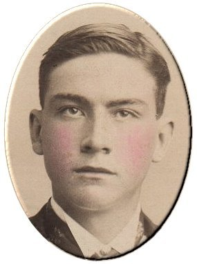
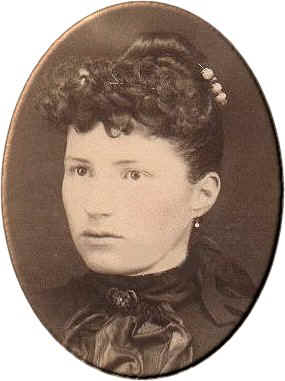
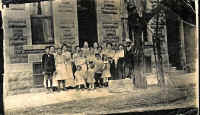
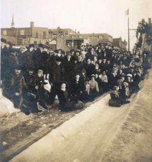
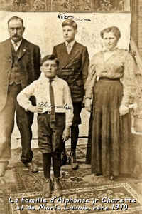

|

ALPHONSE ET MARIE
|
Alphonse naît
le 13 février 1874 à Saint-Henri, Montréal. Il est le fils
aîné de la nombreuse famille d'Alphonse et
Rosianne. Son parrain est Charles
Charette, le frère aîné de son père, et sa marraine,
Théotiste Dubois, sa grand-mère paternelle.
Alphonse va suivre les traces de son père toute sa vie. |
Marie naît le 5
novembre 1875 à Saint-Martin, Laval. Elle est la fille
d'Olivier Lavoie et d'Anastasie Lortie (ou Hortie).
Son parrain est André Montreuil et sa marraine, Marguerite
Duranceau.
Selon l'acte de baptême de Marie, son père est cultivateur.
Ses parents s'étaient mariés le 1 mai 1871 à Sainte- Dorothée,
Laval.
Olivier et sa famille déménagent plus tard à Saint-Henri,
Montréal.
Marie a un frère, Aldéric, qui épouse le 30 juillet 1901 Rose-Anna Charette
(sœur d'Alphonse), et une sœur, Rose-Anna, qui épouse le 1 juin
1891 Joseph Huneault, à Saint-Henri.
|


Le lundi 15 mai 1893, Alphonse Charette fils
épouse Marie Lavoie dans la paroisse Saint-Henri de Montréal. Le témoin de l'époux est son père Alphonse, et celui de
l'épouse, son père Olivier.
Alphonse et Marie signent leur acte de mariage. Alphonse a
dix-neuf ans et Marie, dix-sept ans. C'est une belle jeune fille
rousse (des cousines de Rosario diront plus tard
à Ghislaine que "Marie avait les cheveux rouges").
|

Signature des époux sur leur acte de mariage
|
Le
jeune couple s'installe au 1098 Saint-Antoine, ils sont
voisins des parents d'Alphonse. Ce logement apparaît
régulièrement, dans les annuaires de rues Lovell, comme
habité, tout à tour, par des Charette de plusieurs
générations. Qui est le propriétaire?
En 1896, le couple emménage au 1096 Saint-Antoine, un autre
logement déjà habité par les parents d'Alphonse. Puis, en
1900, on les retrouve au 238 Saint-Ferdinand. Comme
son père, Alphonse est maçon. Sans aucun doute, le fils
travaille avec le père. Lorsque ce dernier prend sa retraite, Alphonse
devient à son tour entrepreneur-maçon. La mention en est fait
la première fois dans l'annuaire Lovell de 1910. Il est fier de
son travail, on le voit dans la photo ci-contre posant, avec
plusieurs membres de sa famille, devant une pierre marquée de
son nom, en quelque sorte la signature de l'artiste posée sur
un édifice en construction. Où est maintenant cette pierre?
Comme son père,
Alphonse construit une belle maison de pierre taillée pour sa
famille, au 1121 Saint-Antoine. Ils s'y installent à partir de
1907, et y vivront jusqu'à leur décès. Orphelin, leur fils Rosario
continue d'y vivre les premières années de son mariage.
 Comme son père,
Alphonse devient un propriétaire foncier important dans
Saint-Henri (témoignage de la mère de Rachel
Philipe-Charette qui était une locataire d'Alphonse). Alphonse
père et fils s'impliquent dans leur famille élargie et leur communauté, et
voient à tout, même aux loisirs d'hiver comme en témoigne la
photo ci-contre.
Cette glissade fabriquée
par eux, pour la famille et le voisinage, attirait même des
gens de Montréal, et tous s'y amusaient beaucoup. (Récit
transmis par Ghislaine qui l'a entendu de Rita et Fleurette
Lavoie, cousines de Rosario)
Les
deux Alphonse sont des hommes modernes. Ils achètent rapidement
des automobiles, et auraient même participé à un rallye (sur
des routes de terre) Montréal-New-York
au début du siècle.
Marie
décède le 19 novembre 1914, à l'âge de trente-neuf ans. Pour
Marie, Alphonse père achète le lot R-1539 au cimetière
Notre-Dame-des-Neiges le 21 novembre. Elle y est inhumée le 23
novembre. Alphonse fils fait graver sur le monument funéraire,
en haut à droite, le prénom de ses six enfants
décédés, même s'ils ne sont pas inhumés dans ce lot. Il décède à
son tour le 9 juillet 1916, à l'âge de quarante-deux ans. Quelques jours plus tôt il avait fait son testament, dans
lequel il lègue tous ses biens à ses deux fils mineurs, et
leur désigne comme tuteur son beau-frère et ami, Aldéric
Lavoie.
|

|
LES DEUILS D'ALPHONSE ET DE
MARIE
 Malgré la naissance de neuf enfants, Alphonse
et Marie ne voient grandir que deux d'entre eux. La
plupart des autres décèdent de maladies infectieuses, et Marie aurait succombé à une de ces maladies
en les soignant. C'est du moins ce que Rosario racontera plus tard
à ses enfants quand ils lui poseront des questions sur leur
grand-maman Marie (souvenir de Gérard).
Or, aucun enfant n'est
décédé en 1914... La photo de famille de 1910, ci-contre, ne
montre que deux enfants. Le recensement de 1911 n'en dénombre
pas plus. Quelle est la véritable raison du décès
de Marie? Il est notoire qu'on ne dit pas toujours la
vérité aux enfants....
On ne peut que constater combien Alphonse et
Marie, pourtant d'un milieu ouvrier aisé, ont vécu des
deuils déchirants. Tout près d'eux, dans le même milieu de
vie, le couple Aldéric Lavoie, frère de Marie, et Rose Anna
Charette, sœur d'Alphonse, ont aussi plusieurs enfants, et ils atteignent tous l'âge adulte. Pourquoi le sort en a-t-il été
autrement pour Alphonse et Marie? Ils ne sont pas les seuls à
vivre de tels deuils, mais ce n'est sûrement pas une
consolation. À cette époque de fervent catholicisme, il y sans
doute le refuge de la prière et le sens du sacrifice, mais leur
a-t-il suffi?
Au début du 20ème siècle, 25% des enfants
meurent avant l'âge d'un an. Les enfants de moins de cinq ans
comptent pour la moitié des décès d'une année, et la plupart
meurent de maladies contagieuses. Par fatalisme, la société
trouve normal un décès d'enfant, ils ne sont pas admis dans un
hôpital avant l'âge de deux ans. Aussi, en 1907, la fondation
de l'Hôpital Sainte-Justine pour les enfants indigents par le
Dr Irma Levasseur, la première femme docteur du Québec, en
association avec Justine Beaubien, répond à un besoin criant
et à un changement de mentalité concernant la valeur de la vie
d'un enfant. |
|
LA
DESCENDANCE D'ALPHONSE ET MARIE |
| Anonyme, le
premier enfant du couple est une fille née le 5 mars 1894. Elle
ne vit que quinze minutes, et est ondoyée. Elle est inhumée le
7 mars. |
Émile naît le 2
juillet 1895 à Saint-Henri. Son parrain est Alphonse Charette
et sa marraine, Rosianne Miron, ses grands-parents paternels.
Il décède le 6 août 1895, et est inhumé le 8 août. |
Rosario naît le
20 janvier 1897 à Saint-Henri. Son parrain est Alphonse
Charette et sa marraine, Rosianne Miron, ses grands-parents
paternels.
Il épouse le 16 janvier 1916, dans la paroisse Saint-Zotique,
Marie-Anna Caron, fille d'Arthur et d'Alphonsine Gagnon.
Il décède le 21 mai 1940 à Saint-Henri.
Rosario
est
notre ancêtre de la 10ème génération |
Argentine naît le
28 novembre 1898 à Saint-Henri. Son parrain est Aldéric Lavoie
et sa marraine, Rose-Anna Charette, oncle et tante de l'enfant.
Elle décède le 18 décembre 1900 et est inhumée le 20
décembre. |
Alma naît le 12
septembre 1900 à Saint-Henri. Son parrain est Jacques Charette
et sa marraine, Mathilda Ouimet, grand-oncle et grande-tante de
l'enfant du côté paternel.
Nous ignorons la date de son décès, probablement avant 1910. |
Alexandre naît le
2 octobre 1901 à Saint-Henri. Son parrain est Arthur Messier et
sa marraine, Alexina Charette, tante de l'enfant. Alexandre
étudie en pharmacie, une nouvelle faculté de l'Université de
Montréal.
Il décède le 13 août 1924 lorsque sa voiture tombe dans le
canal Lachine. Il est inhumé le 21 août. |
René naît le 27
juillet 1903 à Saint-Henri. Son parrain est Léonard Miron et
la marraine, Cléophée Therrien, grand-oncle et grande-tante de
l'enfant du côté paternel.
Il décède le 11 juillet 1904 et est inhumé le 13 juillet. |
Réal naît le 12
mars 1905 à Saint-Henri. Son parrain est Arthur Charette, son
oncle, et la marraine, Ubaldine Prieur.
Il décède le 12 juin 1905 à Saint-Henri et est inhumé le 14
juin. |
Anatole naît le 9
avril 1906 à Saint-Henri. Son parrain est Oscar Charette et sa
marraine, Laura Cromp, oncle et tante de l'enfant du côté
paternel.
Nous ignorons la date de son décès, probablement avant 1910. |

|
|